Paula Scher
Rockstar Designer
When I think about design many different images and concepts flood my mind but one designer in particular always makes me smile. Paula Scher has achieved so much throughout her career that it can be daunting as well as inspiring when you start to look at her work. In this essay I shall try to explain why I feel she should be an inspiration to all designers.
Paula Scher could be described simply as a graphic designer but that would be a great disservice to the other facets of her life that include painting and also teaching. But first a little about the beginnings. Paula was born in Washington D.C in 1948. She received a BFA from Tyler School of Art in 1970. Paula met and subsequently married, divorced and remarried Seymour Chwast who also attended Tyler.
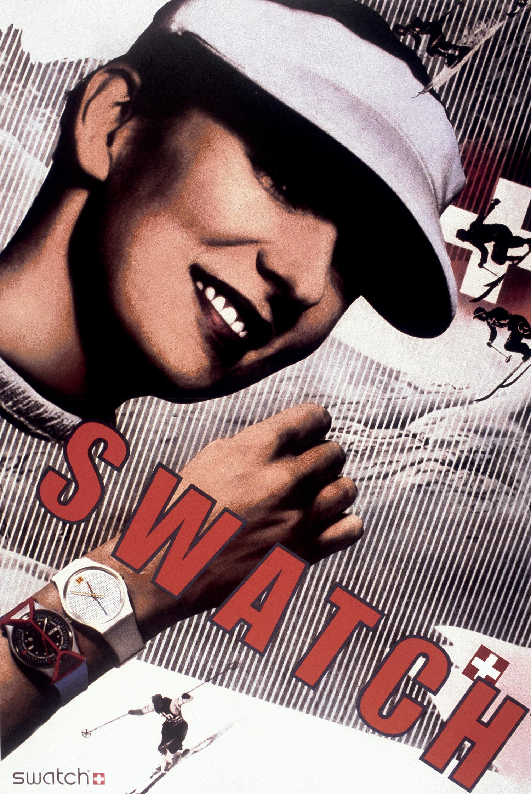“As a child, I failed at everything but art. First, I was too scrawny; then I was too fat; my hair was never right; and I was never popular. But as the school artist, I was okay: that was the first place where I felt like I actually belonged.”
—Paula Scher on belonging.

Its been said that Scher has been inspired by many different design schools and she has even referenced this herself when trying to explain her design process. The idea may take a very short time and its only possible to reach when you draw on your cumulative life experiences. These are gained through every movie you’ve watched or every piece of music you have experienced, well that plus Russian Constructivism! Paula has resurrected outdated or no longer used type faces and incorporated some of their design vocabulary into her own work.
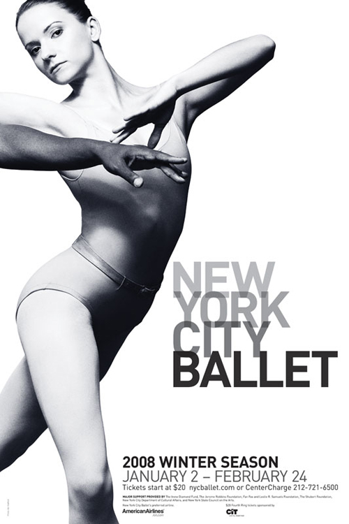Music
The music industry of all places offered Scher a chance to use her skills to showcase her ideas to a mass market yet allowing her to retain creative control. Unlike today, the album cover then was seen a direct link to the youth culture and desirable as a piece of art in its own right. This gave Paula the perfect creative vehicle. Her first job with CBS Records got her a foot on the ladder and a creative freedom. She later worked for Atlantic records for a short time before returning to CBS where she designed over one hundred album covers for artists as diverse as Leonard Bernstein, Roger Dean, Boston, jazz guitarist Eric Gale and pianist Bob James. Some of her album covers even received Grammy nominations! I can see why she would use a vehicle such as the album cover to unleash her imagination plus the timing for her was perfect. I'm not sure now if Scher would have had the freedom to approach designing an album cover in todays digital age.
 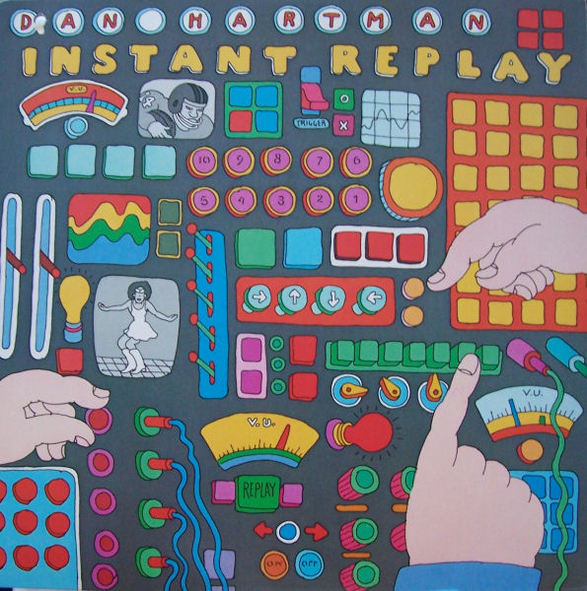
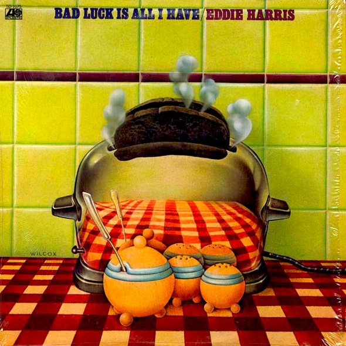
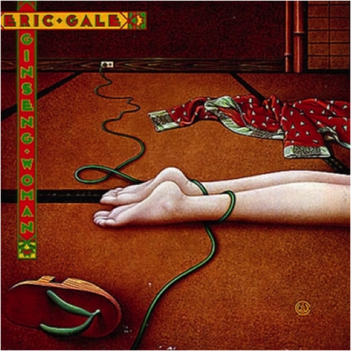
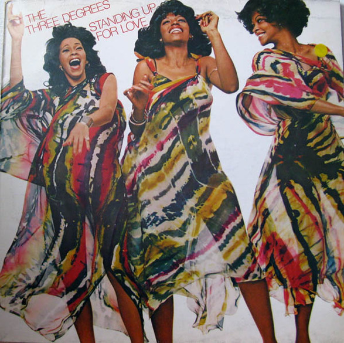
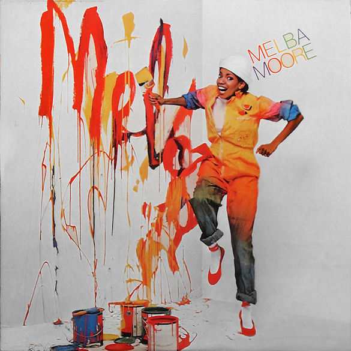
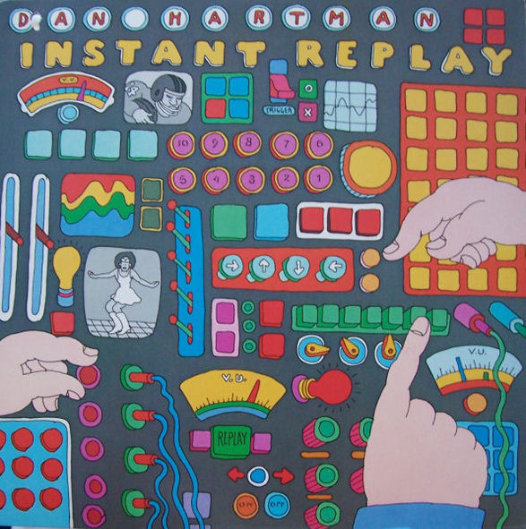
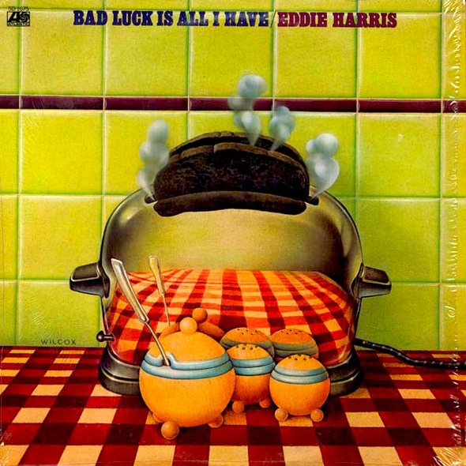
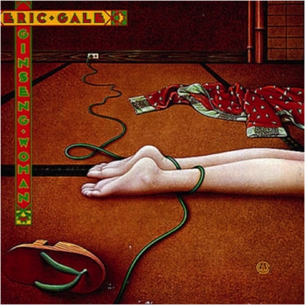
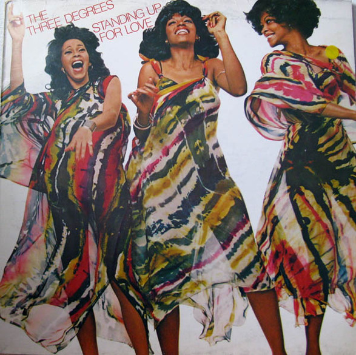
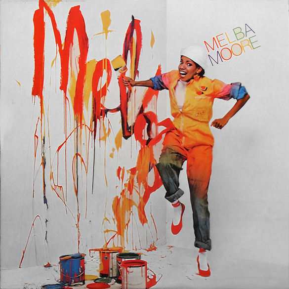
Matter
Before joining Pentagram in 1991 Scher founded Koppel & Scher with Terry Koppel where she produced, among many other things, the famous Herbert Matter inspired Swatch poster. As the saying goes the best form of flattery is imitation and in this case its pretty clear that Scher really liked Matter! It can be claimed that all art is derived from experience so its up to the artist what they want to use or reuse from their life experiences though it would be quite interesting to ask Matter what he thinks about it all.

Maps
Scher also paints as a form of release from the stress of the client based environments and is well known for creating map paintings that are covered in masses of information. Her maps cover many topics including politics and others that deal with human perceptions. Most designers like to share or pass on the knowledge they have gained and Scher is no different. She has taught for nearly twenty years at the School of Visual Arts in New York. She has also taught at Yale, Tyler School of Art and Cooper Union. She shared an interesting thought process below on how and where design ideas can be generated.
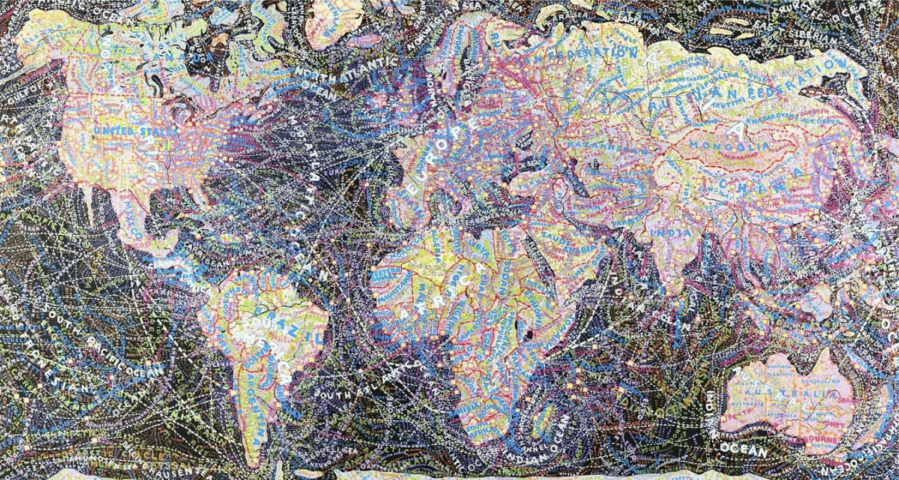Top“Oh, I think I figured out every identity program I’ve ever done in a taxicab. I really do. I think your mind is like a giant slot machine. On one side of your brain, you have all the experiences of your life: every influence, everything that ever inspired you, everything that’s ever made you angry, everything you’ve ever thought, just rolling around in there. It’s fodder. On the other side of your brain is where you input a specific brief, and the specific brief has all the constraints and needs of the particular situation. It all sort of rolls around like a slot machine. You want the brief to line up with a perfect piece of fodder. You pull that fodder to make analogies and make points. It may be something that’s stylistic, or may be a pointed reference of some sort, and these things come together and solve the problem. Now, how does the machine work? How do you know it’s going to work? You don’t. That’s why some work is better than others. I remember a book jacket director in the ‘80s who said my work for him wasn’t up to my normal level, and I said, 'Well, some days I’m just not as talented as other days.”
- Paula Scher on her design process.
Mass
Scher has worked with many large brands and corporations but it could be argued that her most impressive work is in the field of the arts, most noticeably with The Public Theater in New York. She is responsible for the rebranding and development of a new identity for the Public Theatre. This idea had never been used before in the arts and has subsequently shaped how designers treat the entire field of promotion and design for theatre and the arts.
One of the projects that Scher references when asked about her work is the design identity for The Public Theatre. This is better looked at in connection with the poster campagin she created for many Public Theatre productions. Scher uses her font of choice Akzidenz-Grotesk throughout the campagin for The Public Theater. Scher loved the idea of using bright flat colours along with silhouettes. Her design had to connect with a massive audience base that had a strong sociocultural mix along with geographical issues, which it managed to do, while also retaining a wonderful artist charisma.
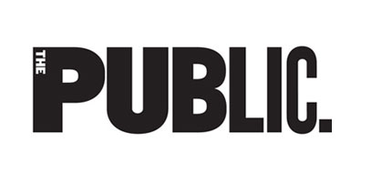The Public Theater Posters are a great example of a large body of work that showcase Scher's use of typography and striking imagery. The posters were used to promote Twelth Night, HIM and Simpatico among many other theatre productions. The posters themselves are now considered iconic and capture the vibrant essence of the New York theatre scene. Scher used influences from street culture when designing campaigns for Bring in ’Da Noise by Savion Glover. She created a new kind of typography that almost felt like it had existed beforehand - a visual language with influences from graffiti - it later became widely used to such an extent that it could almost be considered the typeface of New York City itself. I really feel Scher’s work with the Public Theatre is amazing. It connects on an immediate, striking visual level but also has the power to actually drill its way inside your mind. I have actually found myself thinking of what it must have been like for the people who saw these posters for the first time. Posters like Twelfth Night were such a break from what had been used beforehand to promote the arts.
 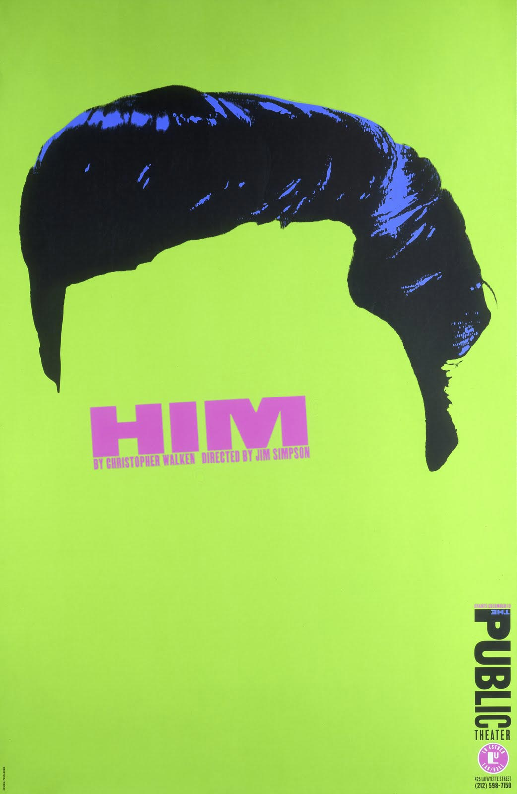
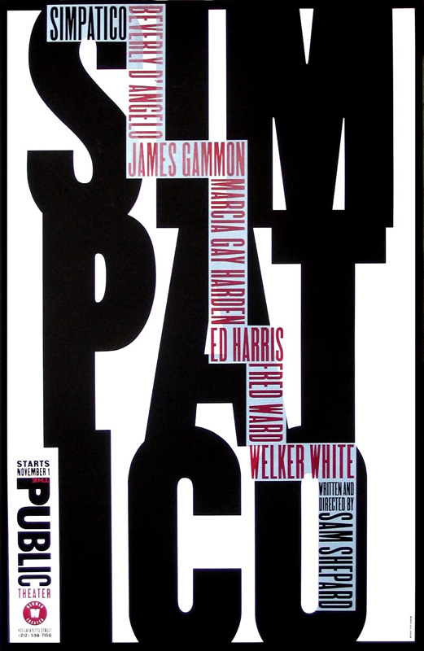
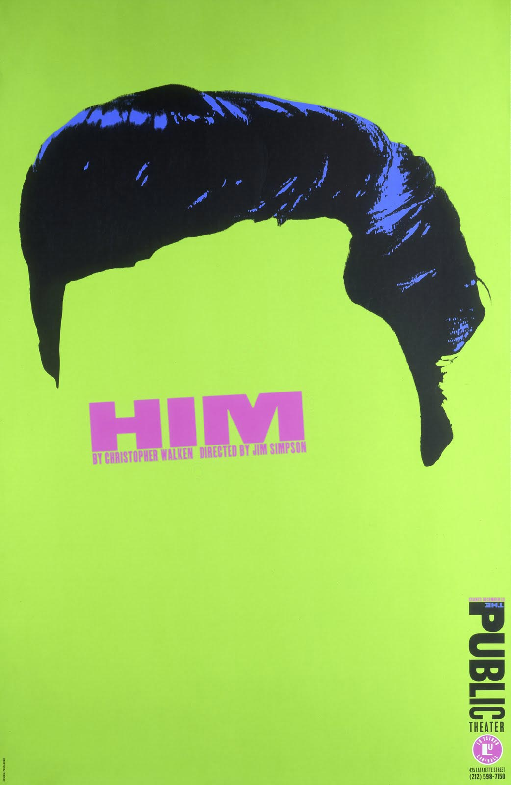
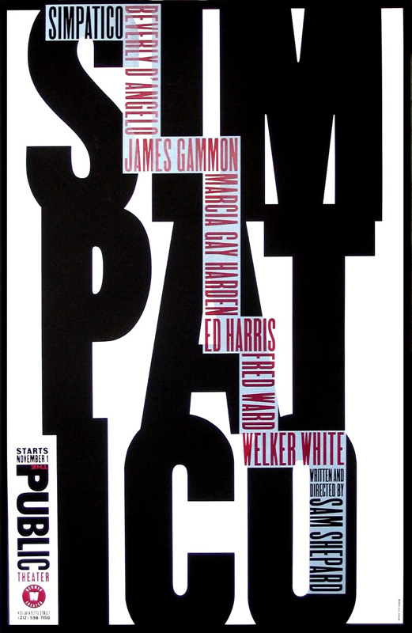
Another example of Schers design history influences can be seen in a more recent project. Below is an image of the brand identity Scher created for The Atlantic Theatre Company. She cleverly used strong blocks of colour in the main logo which are carried throughout the rest of the marketing and promotional work for the company and its numerous productions. Scher used a limited colour palette and strong typography to define the brand. There are influences from Dada, Constructionism and even Futurism in this project.
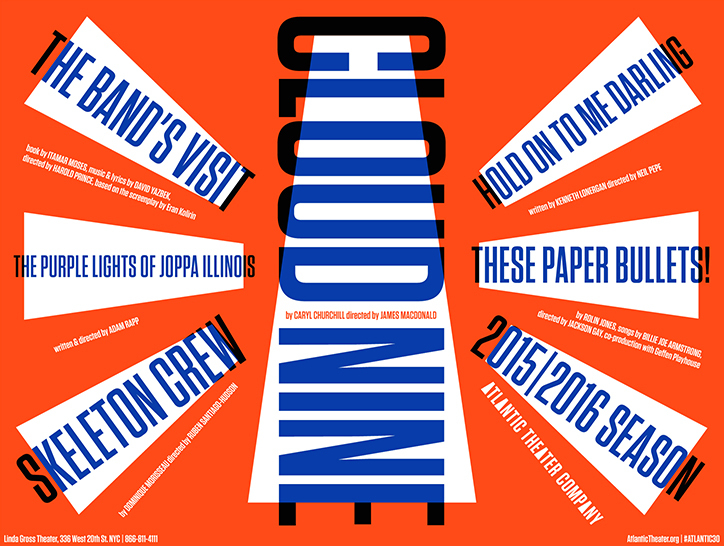Scher has created various ‘super graphics’ for environmental projects like PAVE Academy Charter School. This is a school in Brooklyn for low income families. Another school based project that was a tremendous success was Achievement First Endeavor Middle School. This project was achieved with only the use of vibrant strong colours and simple text in the form of slogans. The branding of the New York Ballet is probably the most famous and is an incredibly striking piece of art along with conveying the new brand identity for the ballet company.
Outro
To conclude Scher began her career as an art director in the seventies and has been a leading force in the world of design since. After joining Pentagram in 1991 her work has managed to connect with millions of people from around the globe. It has been imitated on many occasions but her work still retains it's vigour and playfulness. Her design for Citibank, one of the largest financial institutions in the world (which was said to have been created in less than a minute on the back off a napkin) has been used in studies about regeneration of American brands. For that alone she needs to be held in the highest regard. Scher has worked with clients as diverse as Coca-Cola, the Museum of Modern Art, Bloomberg, the New York Philharmonic, Microsoft, the Metropolitan Opera, New York Botanical Garden, Perry Ellis, United States Holocaust Memorial Museum and The Daily Show With Jon Stewart.
Scher has received hundreds of industry awards including AIGA Medal 2001, National Design Award, Chrysler Award for Innovation in Design, Beacon Award and her work has been exhibited all over the world. From Centre Georges Pompidou in Paris to the Museum of Modern Art, from the Cooper-Hewitt National Design Museum in New York to the Victoria and Albert Museum in London with other pieces now displayed in Washington's Library of Congress, Philadelphia Museum of Art, Denver Art Museum, Museum für Gestaltung Zürich and Bibliothèque nationale de France. Her attitude and personality are infused in her work yet she manages to contain her ego while at the same time living up to her reputation. For someone who started her design career as an Illustrator who wasn’t very good at drawing I feel she is an inspiration to anyone no matter what creative field they are in. The ability to understand and inspire the client is key to her success. I strongly feel she has the ability to connect on a different level which derives from her ability to use facets from different design schools and blend them in a visually striking and clever way. Paula Scher always leaves me thinking I wish I had thought of that.
Top“I don’t think of design as a job. I think of it as—and I hate to use this term for it—more of a calling. If you’re just doing it because it’s a nice job and you want to go home and do something else, then don’t do it, because nobody needs what you’re going to make.”
- Paula Scher on design calling.